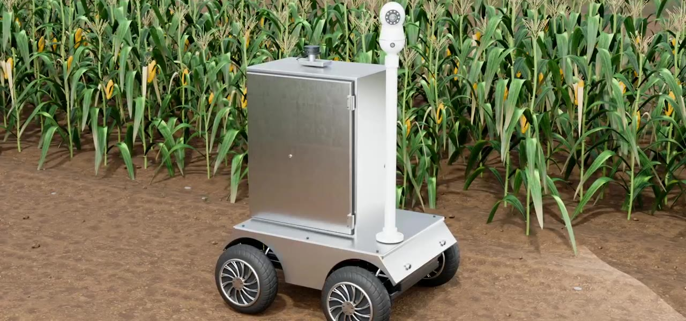
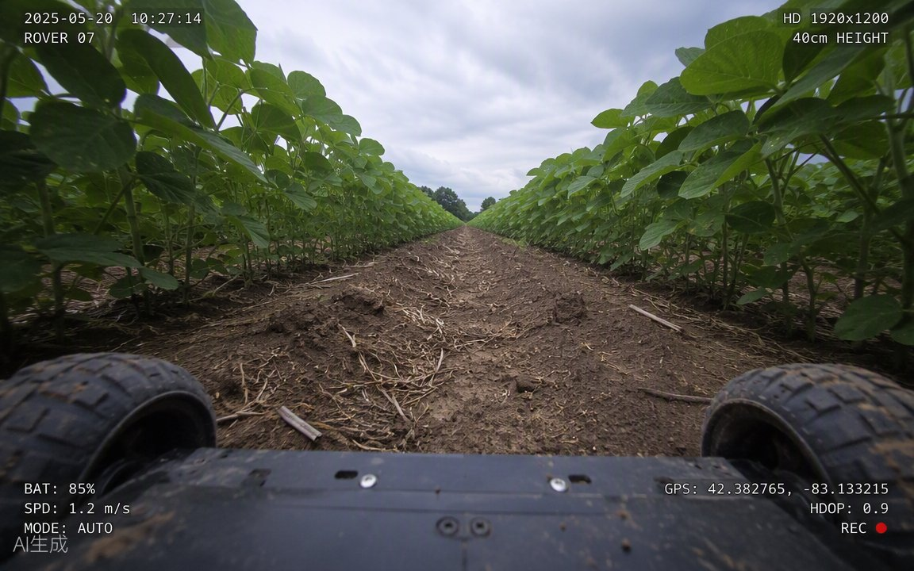

FIELD OPERATIONS / 01
巡检小车
移动控制台
查看巡航路线，体验远程驾驶与设备控制。

DRIVE CONTROL / 02
远程操控
巡航与手动驾驶集中在这里，随时可以返航或停止。
FIELD VIEW / 03
镜头与设备
查看巡检视角样片，体验拍照、照明和云台控制。
ISSUE ALBUM / 04
异常相册
按巡检位置查看疑似异常作物，记录待人工复核的问题。
SPRAY MODULE / 05
喷洒作业
预先规划喷洒任务；设备模块尚未安装，当前离线。
当前状态待命
模拟电量86%
当前速度0.0 m/s
01 / PATROL ROUTE
巡检路线
N ↑
本次进度 38%下一站 · A2 玉米田
轨迹与位置为网页仿真，不是实时 GPS 数据。地图底图沿用项目现有素材。
进入远程操控02 / DRIVE CONTROL
驾驶模式
当前路线A1 水稻 → B2 蔬菜
全程 13 个节点拖动摇杆控制方向与速度，松手立即停车。
按住并拖动 · 松手停止
ROVER
速度档位m/s · 演示值
本页仅发送网页内的模拟指令，没有连接实车。真实控制需接入认证、遥测与硬件安全联锁。
03 / FIELD VIEW
巡检视角

● 历史样片 · 非实时视频异常记录样本
从真实作物问题参考照片中选择一种，模拟在小车当前位置拍照并存入相册。
所选照片由公开资料提供，不是小车实拍；位置为演示路线坐标，并非 GPS。
04 / ISSUE ALBUM
巡检异常记录
照片均为真实作物病虫害参考图；相册中的地点是演示巡检路线坐标，所有“疑似异常”需人工复核。
新增记录仅保存在本机浏览器中。清除网站数据后会消失，不会上传至服务器。
05 / SPRAY MODULE
喷洒任务
计划仅保存在当前浏览器中。实际喷洒必须先安装模块、连接设备并由人员确认现场条件与用药方案。
惠农智慧农业 · 巡检小车交互演示